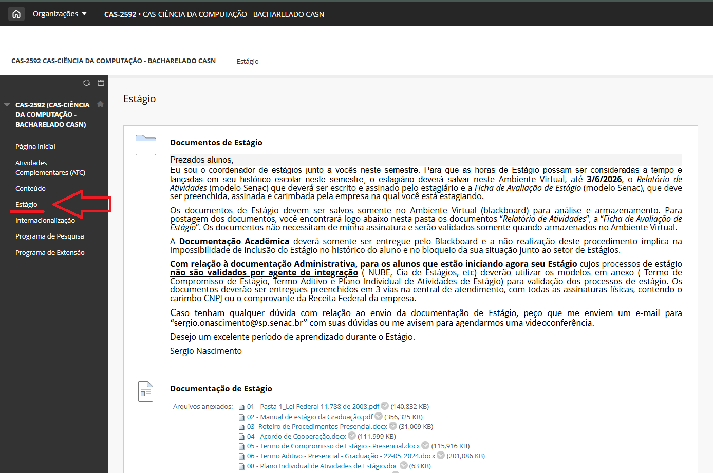

Professor Responsável
Sérgio de Oliveira Nascimento
Descrição
No BCC, o estágio não é obrigatório, mas é altamente recomendado para a formação prática do aluno. O estágio é uma atividade que proporciona ao aluno a oportunidade de aplicar os conhecimentos teóricos adquiridos durante o curso em situações reais de trabalho, sob a supervisão de um profissional experiente.
O coordenador do curso não é o coordenador de estágio!
Envie toda documentação pelo blackboard, para o professor responsável pelo estágio, nunca diretamente para o e-mail do professor.
O Regulamento de Graduação e o Manual de Estágio normatiza internamente os procedimentos para formalização contratual do vínculo entre escola, unidade concedente e aluno, além de disciplinar os procedimentos de orientação, supervisão e avaliação do desempenho do aluno nessa atividade.
Há uma página específica, na comunidade do curso no BlackBoard, dedicada ao Estágio. Não deixe de consultá-la.
